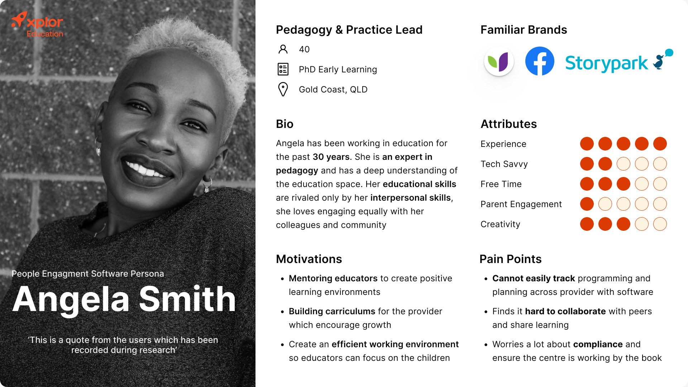

Angela Smith
Pedagogy & Practice Lead · Gold Coast, QLD

Thirty years in education and an expert in pedagogy. She wants to mentor educators and build curriculums, but struggles to track programming and planning across the provider and to collaborate with peers.